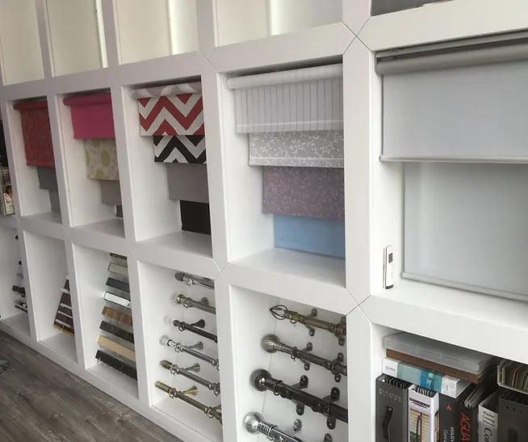

Official Luxaflex dealer · Mill Hill
Luxaflex blinds in Mill Hill
Explore the Luxaflex range with Martin Kaye Interiors, an official dealer with a showroom at 625 Watford Way.

Explore the Luxaflex styles listed for our showroom
The official Luxaflex dealer listing for Martin Kaye Interiors names the products available through this showroom. Each style offers a different way to handle daylight, privacy and the look of a window. Ask the team to confirm current samples and availability for your enquiry.
Softly shaped fabrics
Duette® has a honeycomb structure. Pleated blinds form a crisp folded profile. Sonnette™ combines the shape of a roller blind with a cellular construction. These styles can be compared for their appearance, fabric choices and fit to the window.
Layered light control
Silhouette® uses soft fabric vanes between sheer facings, while Pirouette® has fabric vanes attached to a sheer backing. Duo roller blinds use alternating sheer and opaque fabric bands. Their layered designs let you consider a balance between daylight, view and privacy.
Classic blind types
The listed roller range has a simple fabric profile; Venetian blinds use adjustable horizontal slats; wooden blinds bring a slatted finish; and vertical blinds use upright vanes. The best option depends on the room, opening, clearances and how you prefer to adjust the light.
Choose by room, light and operation
Start with the view you want to keep and the privacy you need. Daylight and privacy can behave differently after dark, when an interior light is on. Think about how the window opens, whether the blind needs to clear a handle or door, and how you want to operate it.
At the showroom, ask about fabric transparency, texture, colour and available control options for the product you are considering. Product options and sample availability are confirmed directly with Martin Kaye Interiors for the individual enquiry.
Visit our official Luxaflex dealer showroom
The official Luxaflex listing gives the showroom address as 625 Watford Way, Mill Hill, NW7 3JN and lists weekday hours of 08:30–17:30. Call or email to discuss your windows or arrange a visit. You can also request an appointment through the manufacturer’s dealer page.
View the official Luxaflex dealer listing and appointment page ↗
Common questions
Is Martin Kaye Interiors an official Luxaflex dealer?
Yes. Martin Kaye Interiors is listed on the official Luxaflex website as a showroom and dealer at 625 Watford Way, Mill Hill. The listing names the Luxaflex products available through this showroom.
Which Luxaflex blinds can I ask about?
The listing names Duette®, Pirouette®, Silhouette®, Sonnette™, roller, Duo roller, wooden, pleated, Venetian and vertical blinds. It also lists external screens, awnings and pergolas. Ask the showroom to confirm current options and availability.
Can you help me compare styles for my windows?
Yes. Share your room’s light and privacy needs, window type and preferred look. The team can discuss the listed options and which details need checking for your window.
How do I arrange a Luxaflex consultation?
Call or email Martin Kaye Interiors, arrange a showroom visit, or use the appointment request on the official Luxaflex dealer page. Appointment availability is confirmed through the showroom.
Ask about Luxaflex at the Mill Hill showroom
Call 020 8906 9900, email info@mkiuk.com or arrange a showroom visit.
Prepare your enquiry ↗